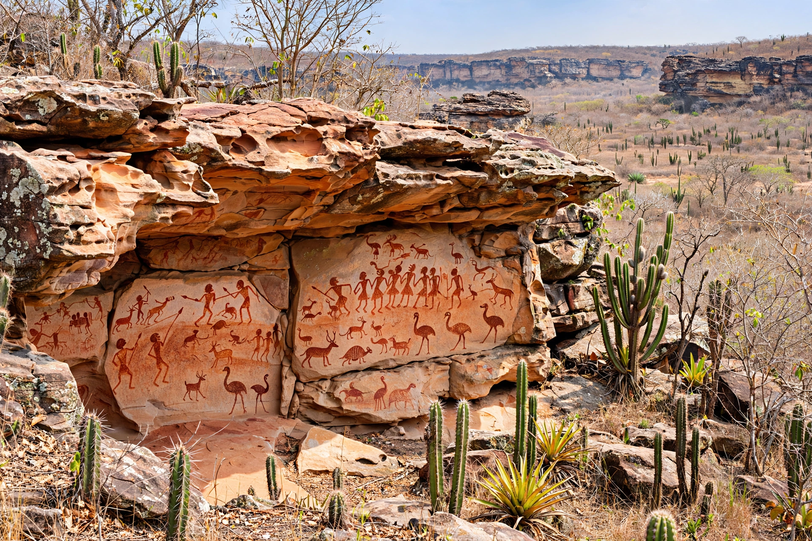

| Country | Brazil |
|---|---|
| Region | Northeast |
| Capital and largest city | Teresina |
| Area | 251,529 km² (5th) |
| Population | ~3.27 million (2022 census) |
| Neighboring states | Maranhão, Ceará, Pernambuco, Bahia, Tocantins |
| Main river | Parnaíba River |
| Time zone | UTC−3 (BRT) |
Piauí (Portuguese pronunciation: [pjɐˈwi]) is one of the 26 states of Brazil, located in the country's Northeast Region. It borders Maranhão to the west, Ceará and Pernambuco to the east, Bahia to the south and southeast, and Tocantins to the southwest, with a short 66 km coastline on the Atlantic Ocean — the shortest littoral of any Brazilian coastal state. Its capital and largest city is Teresina, the only capital in the Northeast located in the interior rather than on the coast.
The state's most famous heritage is much older than Brazil itself: the Serra da Capivara National Park in the southeast preserves thousands of prehistoric rock paintings and artifacts, protected as a UNESCO World Heritage Site since 1991. Excavations led by archaeologist Niède Guidon at sites such as Pedra Furada have produced dates for human presence far earlier than the conventional settlement chronology of the Americas — claims (extending to 50,000 years and more) that remain debated among archaeologists.
Colonial settlement came late and from the interior outward: in the late 17th century, cattle ranchers from Bahia, most famously Domingos Jorge Velho and Domingos Afonso Sertão, established vast ranches in the sertão, founding the settlement that became Oeiras, the first capital. Piauí became a separate captaincy in 1718 (effectively administered from 1758). The Battle of Jenipapo (13 March 1823), fought near Campo Maior during the Brazilian war of independence, is the state's great patriotic episode — one of the bloodiest battles of independence, lost tactically but decisive in securing the north for the new empire. In 1852 the capital was transferred to the new planned city of Teresina, on the Parnaíba River, named for Empress Teresa Cristina.
The Parnaíba River, forming the western border with Maranhão, is the state's principal waterway; its delta — one of the few open-sea river deltas in the Americas — is shared near the coastal city of Parnaíba. The interior rises from coastal lowlands to plateaus (chapadas) in the south and east. The east is semi-arid sertão of caatinga scrub, hot and drought-prone; the southwestern cerrados, around Uruçuí and Bom Jesus, have been transformed since the 1990s into one of Brazil's newest soybean frontiers as part of the MATOPIBA agricultural region (Maranhão–Tocantins–Piauí–Bahia).
Historically cattle ranching, carnauba wax, babaçu palm products, and cashew defined the economy; today soy, corn, and cotton in the southern cerrados, wind and solar power (the state hosts some of Brazil's largest wind complexes), and services concentrated in Teresina lead. Piauí nonetheless remains one of Brazil's poorer states by per-capita income, though its literacy and health indicators have improved markedly since the 2000s. Culturally the state is known for its June festivals, its opal mining at Pedro II, and Teresina's claim as one of Brazil's hottest capitals — its residents joke that there are "two seasons: summer and hell."